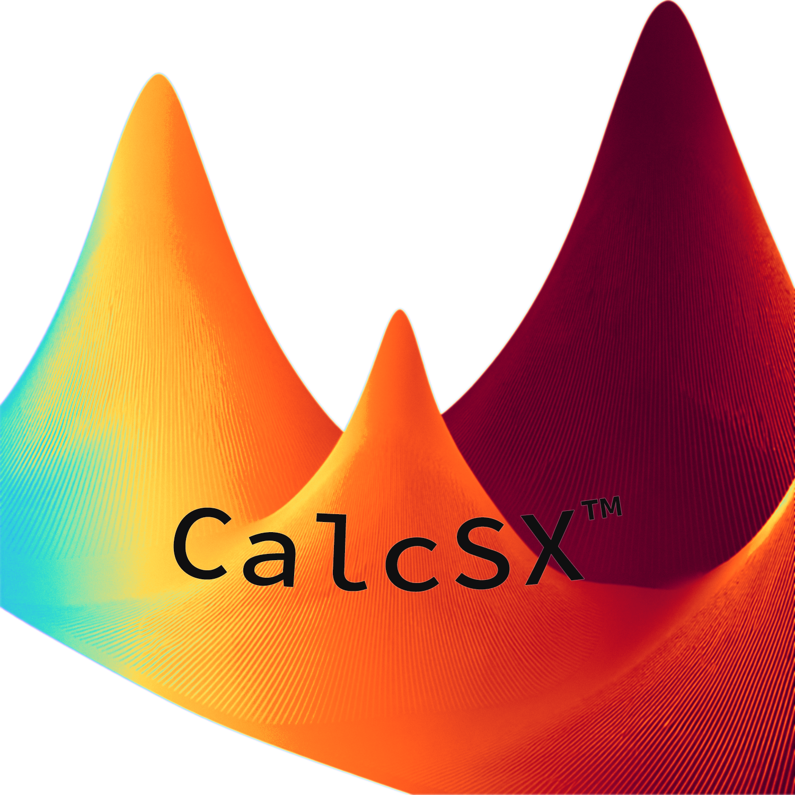

◎
B-field analysis
Compute centroid and on-axis field behavior, with optional cross-section sampling.

CalcSX is a technical desktop interface for superconducting coil analysis: B-field evaluation, Lorentz force density, hoop stress, geometry inspection, and export-ready results in one workflow.
Geometry ingestion, automatic structure inference, field and force evaluation, stress diagnostics, and export-ready outputs.
Compute centroid and on-axis field behavior, with optional cross-section sampling.
Resolve segment-wise J×B forces along the arc for engineering interpretation.
Inspect membrane-based hoop stress trends in MPa across the coil path.
Infer symmetry direction and detect planar structure automatically.
Tune grid density and on-axis samples for the speed-detail balance you want.
Save results to CSV for follow-on analysis in Python, MATLAB, or spreadsheets.
Import 3D centerline coordinates from x, y, z columns.
Configure current, winds, tape thickness, width, and sampling controls.
Compute B-field, Lorentz force density, hoop stress, and derived outputs.
Review plots and export CSV outputs for downstream use.
Static code boxes are useful, but this section also lets the site simulate how different parts of the app feel.
x,y,z
0.1000,0.0000,0.0000
0.0707,0.0707,0.0010
0.0000,0.1000,0.0020
-0.0707,0.0707,0.0010
-0.1000,0.0000,0.0000
...Load a centerline, inspect geometry, then run analysis.
python3 -m CalcSX_app.main
# or from inside the app directory
python3 main.pyLaunch the desktop app, load geometry, and generate results.
exports/
├── force_density_vs_arc.csv
├── hoop_stress_vs_arc.csv
└── on_axis_bfield.csvExport key outputs directly for downstream workflows.
Simulated comparison of a vectorized numerical core versus a loop-heavy baseline.
Placeholder downloads for now. These buttons currently serve a simple test file, but the layout is ready for real Windows and Mac releases later.
Planned desktop build for Windows systems.
Download test filePlanned desktop build for macOS systems.
Download test file